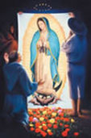

|
|||
|
|||
| Our Lady of Guadalupe Set | |||
|  | |
|
|
| Madonna - B | Jesus | Behold Your Mother | Queen of Heaven |
The first two paintings are mirror-images of the same scene – one as seen through the eyes and heart of Mary and the other seen through the eyes and heart of Jesus.In 1955 an amazing discovery was confirmed by an investigative committee examining the tilma. Reflected in the eyes of the Blessed Virgin are 3 figures. They can be seen quite clearly as in any eyes with distortions caused by the curvature of the cornea. One figure is larger and bears a distinct resemblance to the earliest portraits of Juan Diego. The other two are less clear but are presumed to be Bishop Zumarraga and the interpreter. It is like having an actual photographic image of Juan Diego and the scene as it happened. This reflected image is what the artist used as his pattern for the painting.
The figure of Juan Diego, being the most clear, is followed closely – his face, hand, beard, hat, arm and sleeve. In his expression can be seen the childlike reverence and devotion which makes it clear why Mary chose him as her messenger.
Bishop Zumarraga’s appearance is less clear except for the fact that he was undoubtedly kneeling. This beautiful portrait of the Blessed Mother was sent to Bishop Zumarraga specifically in answer to his request for a sign. With what love and generosity our Lady fulfilled his request! When she looked into his eyes, he fell to his knees in awe and reverence. He is shown in the gray robes worn by Franciscans of that period.
The third figure in the background was the interpreter who translated Juan Diego’s Aztec language into Spanish for the Bishop. The artist did a self-portrait for this figure, assuming the role of the translator of this miracle onto canvas for us today.
Mary’s image on the tilma is being held up with arms and hands of love and wonder. Her crown is made up of twelve crosses, the cross being the source of her Queenship. The numbers of roses at her feet where chosen for their spiritual significance with a total of 55 roses, the number of 55 signifying the 5 Our Fathers and 50 Hail Marys of the rosary. Forty of the roses are red, a number used Biblically to denote purification, such as the 40 days and nights Moses fasted when he wrote down the words of the covenant, the Ten Commandments. The 12 yellow roses symbolize the 12 apostles and the 12 tribes of Israel; and the 3 purple roses signify the Most Holy Trinity and the Sacred Triduum.